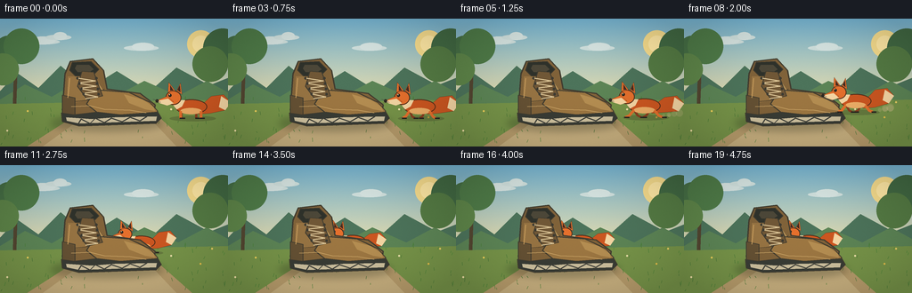
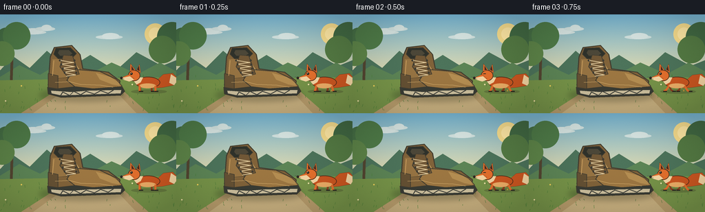

CODING AGENTS AS PIXEL WORLD MODELS
traex/GPT-5.6-Sol · dynamic_spatial_relationship_0031
点击播放 · 原生 RGB 像素
逐轮保存的候选
回放视频、检查图与代码变化。
每份候选均可单独播放。实际图片检查记录在下方工具轨迹中。
候选 01播放与检查图
点击播放 · 原生 RGB 像素


展开代码变化
--- 上一保存版本
+++ 本次保存版本
@@ -0,0 +1,195 @@
+from pathlib import Path
+import math
+import numpy as np
+from PIL import Image, ImageDraw, ImageFilter
+import artifact_io
+
+W,H,N,S = 256,144,20,4
+rng=np.random.default_rng(31)
+
+def sc(v): return int(round(v*S))
+def pts(seq): return [(sc(x),sc(y)) for x,y in seq]
+def box(b): return tuple(sc(x) for x in b)
+def ellipse(d,b,fill,outline=None,width=1): d.ellipse(box(b),fill=fill,outline=outline,width=sc(width) if outline else 1)
+def poly(d,p,fill,outline=None,width=1):
+ d.polygon(pts(p),fill=fill)
+ if outline: d.line(pts(p+[p[0]]),fill=outline,width=sc(width),joint='curve')
+def line(d,p,fill,width=1): d.line(pts(p),fill=fill,width=sc(width),joint='curve')
+
+def background(frame):
+ # dusk-like sunny autumn park with atmospheric depth
+ yy=np.arange(H*S)[:,None]
+ sky_top=np.array([118,181,211.]); sky_bot=np.array([233,221,172.])
+ t=np.clip(yy/(93*S),0,1)[...,None]
+ arr=np.broadcast_to((sky_top*(1-t)+sky_bot*t),(H*S,W*S,3)).copy()
+ arr[sc(91):]=np.array([119,143,75.])
+ im=Image.fromarray(np.uint8(np.clip(arr,0,255)),'RGB')
+ d=ImageDraw.Draw(im)
+ # distant sun and cloud wisps
+ ellipse(d,(210,13,241,44),(246,220,141))
+ ellipse(d,(216,19,235,38),(255,232,164))
+ for x,y,w in [(25,23,42),(51,18,29),(139,30,39)]:
+ ellipse(d,(x,y,x+w,y+6),(209,225,222)); ellipse(d,(x+9,y-3,x+w-5,y+6),(216,230,227))
+ # distant hills
+ poly(d,[(-5,87),(19,61),(43,78),(68,53),(99,79),(131,59),(168,82),(198,55),(235,75),(265,63),(265,100),(-5,100)],(77,116,91))
+ poly(d,[(-5,94),(28,74),(58,88),(90,69),(126,89),(162,70),(200,87),(232,70),(265,88),(265,105),(-5,105)],(93,133,86))
+ # tree trunks / foliage, kept soft and distant
+ line(d,[(18,38),(16,101)],(83,70,49),4); line(d,[(19,55),(7,68)],(83,70,49),2)
+ for cx,cy,r,col in [(10,36,17,(71,112,70)),(24,31,20,(79,123,72)),(3,57,18,(94,133,73)),(250,33,22,(66,105,67)),(236,51,20,(85,123,68))]:
+ ellipse(d,(cx-r,cy-r,cx+r,cy+r),col)
+ # field bands and path, wide near viewer
+ poly(d,[(-5,96),(260,91),(260,146),(-5,146)],(119,148,73))
+ poly(d,[(111,92),(157,92),(218,146),(27,146)],(184,157,108))
+ poly(d,[(118,93),(150,93),(200,146),(45,146)],(201,177,128))
+ # grass blades and flowers (deterministic fixed positions)
+ local=np.random.default_rng(341)
+ for _ in range(90):
+ x=float(local.uniform(0,256)); y=float(local.uniform(91,143))
+ # avoid too much visual noise on path center
+ if 45+(y-92)*1.2 < x < 200-(y-92)*.75 and local.random()<.72: continue
+ hh=float(local.uniform(1.5,4.8)); c=(73,116+int(local.uniform(0,20)),55)
+ line(d,[(x,y),(x+local.uniform(-1.3,1.3),y-hh)],c,.55)
+ for x,y,c in [(31,104,(244,211,91)),(225,111,(235,192,74)),(8,126,(245,228,171)),(238,94,(235,207,100)),(192,102,(245,231,176))]:
+ ellipse(d,(x-1,y-1,x+1,y+1),c)
+ return im
+
+def draw_shoe(im):
+ d=ImageDraw.Draw(im)
+ # soft cast shadow under shoe
+ sh=Image.new('RGBA',im.size,(0,0,0,0)); sd=ImageDraw.Draw(sh)
+ sd.ellipse(box((57,108,184,127)),fill=(42,46,29,76)); sh=sh.filter(ImageFilter.GaussianBlur(sc(4)))
+ im.paste(sh,(0,0),sh); d=ImageDraw.Draw(im)
+ # chunky hiking shoe, three-quarter side view, strongly recognizable
+ dark=(55,58,49); edge=(66,61,48); leather=(129,99,58); light=(168,132,76); hi=(193,157,96)
+ # rear ankle cuff and upper
+ poly(d,[(70,103),(73,62),(79,48),(104,45),(116,58),(120,79),(157,84),(174,97),(172,111),(79,114)],leather,edge,1.5)
+ # cuff opening
+ poly(d,[(78,58),(81,49),(102,48),(111,57),(104,64),(85,65)],(47,50,43),edge,1)
+ poly(d,[(84,56),(86,52),(100,52),(105,57),(100,60),(87,60)],(77,72,57))
+ # ankle light panel / seams
+ poly(d,[(76,65),(102,65),(112,78),(103,91),(75,96)],(151,116,67),None)
+ line(d,[(104,64),(115,81),(154,87)],hi,1.1)
+ line(d,[(75,94),(105,91),(117,79)],(91,73,47),1)
+ # toe vamp
+ poly(d,[(107,80),(145,83),(168,94),(177,104),(172,111),(112,108),(97,96)],(157,119,66),edge,1.2)
+ poly(d,[(139,85),(160,91),(172,99),(174,104),(163,102),(145,95)],(181,142,82))
+ # heel reinforcement
+ poly(d,[(70,86),(84,89),(84,109),(70,111)],(101,81,52),edge,1)
+ # tongue
+ poly(d,[(92,59),(105,60),(115,87),(98,91),(87,76)],(113,88,55),edge,1)
+ # eyelet strips and laces
+ for i in range(4):
+ y=67+i*6; x1=87+i*2.3; x2=108+i*.9
+ ellipse(d,(x1-1.5,y-1.5,x1+1.5,y+1.5),(63,60,50))
+ ellipse(d,(x2-1.4,y-1.4,x2+1.4,y+1.4),(63,60,50))
+ line(d,[(x1+1,y),(x2-1,y+3),(x1+2,y+5)],(224,201,154),1.2)
+ # sole and tread
+ poly(d,[(69,106),(83,108),(109,105),(135,108),(177,105),(181,112),(175,118),(89,121),(70,116)],(57,60,53),edge,1)
+ poly(d,[(74,111),(103,113),(129,111),(176,110),(175,115),(89,118),(75,115)],(205,192,158))
+ line(d,[(88,118),(91,113),(101,118),(107,112),(117,117),(125,112),(137,116),(146,111),(157,115),(165,110)],(63,64,57),1.2)
+ # stitched detail and warm highlight
+ line(d,[(80,99),(101,98),(117,102),(146,103),(164,106)],(214,175,110),.7)
+ line(d,[(78,67),(76,89)],(201,158,94),1)
+
+def draw_fox(im,x,g,scalev,phase,blink=False,opacity=255):
+ # fox in left-facing profile; feet register on ground g
+ layer=Image.new('RGBA',im.size,(0,0,0,0)); d=ImageDraw.Draw(layer)
+ def P(a,b): return (x+a*scalev,g+b*scalev)
+ def B(a,b,c,e): return box((x+a*scalev,g+b*scalev,x+c*scalev,g+e*scalev))
+ def PP(q): return pts([(x+a*scalev,g+b*scalev) for a,b in q])
+ outline=(87,48,27,opacity); red=(205,87,33,opacity); red2=(229,112,45,opacity); cream=(246,215,164,opacity); black=(39,36,31,opacity)
+ # contact shadow
+ d.ellipse(B(-27,-2,32,5),fill=(45,43,29,int(60*opacity/255)))
+ # tail behind body, lifted while running
+ wag=2.5*math.sin(phase*.65)
+ tail=[(11,-13),(26,-27+wag),(42,-29+wag),(51,-19+wag),(44,-9+wag),(25,-5),(10,-4)]
+ d.polygon(PP(tail),fill=red,outline=outline)
+ d.polygon(PP([(39,-27+wag),(51,-19+wag),(44,-9+wag),(36,-13+wag)]),fill=cream)
+ # legs, gait cycle: legs swing in opposing pairs
+ swing=math.sin(phase); swing2=-swing
+ # far legs darker
+ for lx,sv in [(7,swing2),(-12,swing)]:
+ knee=(lx+5*sv,-1); foot=(lx+10*sv,1)
+ d.line(PP([(lx,-7),knee,foot]),fill=(137,63,32,opacity),width=max(1,sc(3*scalev)),joint='curve')
+ d.line(PP([(foot[0]-1,foot[1]),(foot[0]+5,foot[1])]),fill=black,width=max(1,sc(1.7*scalev)))
+ # body and pale belly
+ d.ellipse(B(-20,-23,21,-4),fill=red,outline=outline,width=max(1,sc(1)))
+ d.ellipse(B(-13,-12,14,-4),fill=(239,175,104,opacity))
+ # near legs
+ for lx,sv in [(13,swing),(-13,swing2)]:
+ kx=lx+7*sv; fx=lx+13*sv
+ d.line(PP([(lx,-8),(kx,-1),(fx,1)]),fill=red2,width=max(1,sc(3.5*scalev)),joint='curve')
+ d.line(PP([(fx-1,1),(fx+5,1)]),fill=black,width=max(1,sc(1.8*scalev)))
+ # neck ruff
+ d.polygon(PP([(-16,-22),(-24,-18),(-18,-10),(-11,-14),(-7,-22)]),fill=cream)
+ # head and pointed muzzle
+ d.ellipse(B(-32,-34,-12,-16),fill=red2,outline=outline,width=max(1,sc(1)))
+ d.polygon(PP([(-30,-27),(-44,-21),(-31,-17),(-22,-20)]),fill=red2,outline=outline)
+ # ears
+ d.polygon(PP([(-29,-32),(-28,-45),(-20,-34)]),fill=red2,outline=outline)
+ d.polygon(PP([(-18,-34),(-13,-44),(-11,-29)]),fill=red2,outline=outline)
+ d.polygon(PP([(-26,-34),(-26,-41),(-22,-34)]),fill=(70,45,35,opacity))
+ d.polygon(PP([(-17,-35),(-14,-41),(-13,-32)]),fill=(70,45,35,opacity))
+ # face mask/chin
+ d.polygon(PP([(-43,-21),(-29,-24),(-22,-18),(-30,-15),(-39,-18)]),fill=cream)
+ d.ellipse(B(-45,-23,-41,-19),fill=black)
+ # eye
+ if blink:
+ d.line(PP([(-28,-28),(-24,-28)]),fill=black,width=max(1,sc(1.2*scalev)))
+ else:
+ d.ellipse(B(-28.5,-30,-24.5,-26),fill=black)
+ d.ellipse(B(-27.6,-29.5,-26.5,-28.4),fill=(245,229,178,opacity))
+ # whiskers
+ d.line(PP([(-39,-20),(-48,-23)]),fill=(83,68,54,opacity),width=max(1,sc(.5)))
+ d.line(PP([(-38,-19),(-48,-18)]),fill=(83,68,54,opacity),width=max(1,sc(.5)))
+ im.paste(layer,(0,0),layer)
+
+def add_dust(im,x,g,amount,frame):
+ if amount<=0: return
+ d=ImageDraw.Draw(im,'RGBA')
+ for k in range(5):
+ age=(frame*1.7+k*2.1)%8
+ r=(1.5+age*.4)*amount
+ cx=x+22+age*2.2+k*1.3; cy=g-1-age*.45
+ d.ellipse(box((cx-r,cy-r,cx+r,cy+r)),fill=(219,196,150,int(55*amount)))
+
+def make_frame(i):
+ im=background(i)
+ # initial state is unambiguously on the shoe's right; then run along a receding arc
+ if i<=4:
+ x=214 + .7*math.sin(i*.7); g=111; s=.88; moving=0
+ elif i<=14:
+ u=(i-5)/9
+ ease=u*u*(3-2*u)
+ x=211*(1-ease)+139*ease
+ g=110*(1-ease)+96*ease-2.5*math.sin(math.pi*u)
+ s=.88*(1-ease)+.76*ease
+ moving=1
+ else:
+ x=139+.6*math.sin((i-14)*.5); g=96; s=.76; moving=0
+ phase=(i-4)*2.15 if moving else i*.22
+ # Once the fox reaches the shoe, foreground occlusion explicitly communicates "behind".
+ behind = (i>=10)
+ if behind:
+ draw_fox(im,x,g,s,phase,blink=(i==18))
+ draw_shoe(im)
+ else:
+ draw_shoe(im)
+ draw_fox(im,x,g,s,phase,blink=(i==2))
+ if moving and i<10: add_dust(im,x,g,1,(i-5))
+ # gentle cinematic texture and vignette
+ a=np.asarray(im,dtype=np.float32)
+ yy,xx=np.mgrid[0:H*S,0:W*S]
+ dx=(xx-W*S/2)/(W*S/2); dy=(yy-H*S/2)/(H*S/2)
+ vig=np.clip(1-.10*(dx*dx+dy*dy),.84,1)[...,None]
+ a*=vig
+ # tiny stationary film grain, low enough to retain clean shapes
+ gr=np.random.default_rng(900+i).normal(0,0.8,a.shape[:2])[...,None]
+ a=np.clip(a+gr,0,255).astype(np.uint8)
+ return Image.fromarray(a).resize((W,H),Image.Resampling.LANCZOS)
+
+def main():
+ frames=np.stack([np.asarray(make_frame(i).convert('RGB'),dtype=np.uint8) for i in range(N)])
+ artifact_io.save(frames,Path(__file__).resolve().parent)
+
+if __name__=='__main__': main()
可观测工具轨迹
实际执行的命令与返回图片。
命令 1exit 0
/bin/bash -lc "cat prompt.txt && printf '\\n---RULES---\\n' && cat GENERATION_RULES.md && printf '\\n---SPEC---\\n' && cat task_spec.json"
命令 2exit 1
/bin/bash -lc "find . -maxdepth 2 -type f -printf '%p\\n' | sort && printf '\\n---TOOLS---\\n' && command -v ffmpeg && command -v python3"
命令 3exit 0
/bin/bash -lc 'cat artifact_io.py'
命令 4exit 0
/bin/bash -lc "python3 - <<'PY' mods=['numpy','PIL','imageio','cv2'] for m in mods: try: x=__import__(m); print(m,'ok',getattr(x,'__version__','')) except Exception as e: print(m,'NO',e) PY"
命令 5exit 0
/bin/bash -lc "cat > generate.py <<'PY'
from pathlib import Path
import math
import numpy as np
from PIL import Image, ImageDraw, ImageFilter
import artifact_io
W,H,N,S = 256,144,20,4
rng=np.random.default_rng(31)
def sc(v): return int(round(v*S))
def pts(seq): return [(sc(x),sc(y)) for x,y in seq]
def box(b): return tuple(sc(x) for x in b)
def ellipse(d,b,fill,outline=None,width=1): d.ellipse(box(b),fill=fill,outline=outline,width=sc(width) if outline else 1)
def poly(d,p,fill,outline=None,width=1):
d.polygon(pts(p),fill=fill)
if outline: d.line(pts(p+[p[0]]),fill=outline,width=sc(width),joint='curve')
def line(d,p,fill,width=1): d.line(pts(p),fill=fill,width=sc(width),joint='curve')
def background(frame):
# dusk-like sunny autumn park with atmospheric depth
yy=np.arange(H*S)[:,None]
sky_top=np.array([118,181,211.]); sky_bot=np.array([233,221,172.])
t=np.clip(yy/(93*S),0,1)[...,None]
arr=np.broadcast_to((sky_top*(1-t)+sky_bot*t),(H*S,W*S,3)).copy()
arr[sc(91):]=np.array([119,143,75.])
im=Image.fromarray(np.uint8(np.clip(arr,0,255)),'RGB')
d=ImageDraw.Draw(im)
# distant sun and cloud wisps
ellipse(d,(210,13,241,44),(246,220,141))
ellipse(d,(216,19,235,38),(255,232,164))
for x,y,w in [(25,23,42),(51,18,29),(139,30,39)]:
ellipse(d,(x,y,x+w,y+6),(209,225,222)); ellipse(d,(x+9,y-3,x+w-5,y+6),(216,230,227))
# distant hills
poly(d,[(-5,87),(19,61),(43,78),(68,53),(99,79),(131,59),(168,82),(198,55),(235,75),(265,63),(265,100),(-5,100)],(77,116,91))
poly(d,[(-5,94),(28,74),(58,88),(90,69),(126,89),(162,70),(200,87),(232,70),(265,88),(265,105),(-5,105)],(93,133,86))
# tree trunks / foliage, kept soft and distant
line(d,[(18,38),(16,101)],(83,70,49),4); line(d,[(19,55),(7,68)],(83,70,49),2)
for cx,cy,r,col in [(10,36,17,(71,112,70)),(24,31,20,(79,123,72)),(3,57,18,(94,133,73)),(250,33,22,(66,105,67)),(236,51,20,(85,123,68))]:
ellipse(d,(cx-r,cy-r,cx+r,cy+r),col)
# field bands and path, wide near viewer
poly(d,[(-5,96),(260,91),(260,146),(-5,146)],(119,148,73))
poly(d,[(111,92),(157,92),(218,146),(27,146)],(184,157,108))
poly(d,[(118,93),(150,93),(200,146),(45,146)],(201,177,128))
# grass blades and flowers (deterministic fixed positions)
local=np.random.default_rng(341)
for _ in range(90):
x=float(local.uniform(0,256)); y=float(local.uniform(91,143))
# avoid too much visual noise on path center
if 45+(y-92)*1.2 < x < 200-(y-92)*.75 and local.random()<.72: continue
hh=float(local.uniform(1.5,4.8)); c=(73,116+int(local.uniform(0,20)),55)
line(d,[(x,y),(x+local.uniform(-1.3,1.3),y-hh)],c,.55)
for x,y,c in [(31,104,(244,211,91)),(225,111,(235,192,74)),(8,126,(245,228,171)),(238,94,(235,207,100)),(192,102,(245,231,176))]:
ellipse(d,(x-1,y-1,x+1,y+1),c)
return im
def draw_shoe(im):
d=ImageDraw.Draw(im)
# soft cast shadow under shoe
sh=Image.new('RGBA',im.size,(0,0,0,0)); sd=ImageDraw.Draw(sh)
sd.ellipse(box((57,108,184,127)),fill=(42,46,29,76)); sh=sh.filter(ImageFilter.GaussianBlur(sc(4)))
im.paste(sh,(0,0),sh); d=ImageDraw.Draw(im)
# chunky hiking shoe, three-quarter side view, strongly recognizable
dark=(55,58,49); edge=(66,61,48); leather=(129,99,58); light=(168,132,76); hi=(193,157,96)
# rear ankle cuff and upper
poly(d,[(70,103),(73,62),(79,48),(104,45),(116,58),(120,79),(157,84),(174,97),(172,111),(79,114)],leather,edge,1.5)
# cuff opening
poly(d,[(78,58),(81,49),(102,48),(111,57),(104,64),(85,65)],(47,50,43),edge,1)
poly(d,[(84,56),(86,52),(100,52),(105,57),(100,60),(87,60)],(77,72,57))
# ankle light panel / seams
poly(d,[(76,65),(102,65),(112,78),(103,91),(75,96)],(151,116,67),None)
line(d,[(104,64),(115,81),(154,87)],hi,1.1)
line(d,[(75,94),(105,91),(117,79)],(91,73,47),1)
# toe vamp
poly(d,[(107,80),(145,83),(168,94),(177,104),(172,111),(112,108),(97,96)],(157,119,66),edge,1.2)
poly(d,[(139,85),(160,91),(172,99),(174,104),(163,102),(145,95)],(181,142,82))
# heel reinforcement
poly(d,[(70,86),(84,89),(84,109),(70,111)],(101,81,52),edge,1)
# tongue
poly(d,[(92,59),(105,60),(115,87),(98,91),(87,76)],(113,88,55),edge,1)
# eyelet strips and laces
for i in range(4):
y=67+i*6; x1=87+i*2.3; x2=108+i*.9
ellipse(d,(x1-1.5,y-1.5,x1+1.5,y+1.5),(63,60,50))
ellipse(d,(x2-1.4,y-1.4,x2+1.4,y+1.4),(63,60,50))
line(d,[(x1+1,y),(x2-1,y+3),(x1+2,y+5)],(224,201,154),1.2)
# sole and tread
poly(d,[(69,106),(83,108),(109,105),(135,108),(177,105),(181,112),(175,118),(89,121),(70,116)],(57,60,53),edge,1)
poly(d,[(74,111),(103,113),(129,111),(176,110),(175,115),(89,118),(75,115)],(205,192,158))
line(d,[(88,118),(91,113),(101,118),(107,112),(117,117),(125,112),(137,116),(146,111),(157,115),(165,110)],(63,64,57),1.2)
# stitched detail and warm highlight
line(d,[(80,99),(101,98),(117,102),(146,103),(164,106)],(214,175,110),.7)
line(d,[(78,67),(76,89)],(201,158,94),1)
def draw_fox(im,x,g,scalev,phase,blink=False,opacity=255):
# fox in left-facing profile; feet register on ground g
layer=Image.new('RGBA',im.size,(0,0,0,0)); d=ImageDraw.Draw(layer)
def P(a,b): return (x+a*scalev,g+b*scalev)
def B(a,b,c,e): return box((x+a*scalev,g+b*scalev,x+c*scalev,g+e*scalev))
def PP(q): return pts([(x+a*scalev,g+b*scalev) for a,b in q])
outline=(87,48,27,opacity); red=(205,87,33,opacity); red2=(229,112,45,opacity); cream=(246,215,164,opacity); black=(39,36,31,opacity)
# contact shadow
d.ellipse(B(-27,-2,32,5),fill=(45,43,29,int(60*opacity/255)))
# tail behind body, lifted while running
wag=2.5*math.sin(phase*.65)
tail=[(11,-13),(26,-27+wag),(42,-29+wag),(51,-19+wag),(44,-9+wag),(25,-5),(10,-4)]
d.polygon(PP(tail),fill=red,outline=outline)
d.polygon(PP([(39,-27+wag),(51,-19+wag),(44,-9+wag),(36,-13+wag)]),fill=cream)
# legs, gait cycle: legs swing in opposing pairs
swing=math.sin(phase); swing2=-swing
# far legs darker
for lx,sv in [(7,swing2),(-12,swing)]:
knee=(lx+5*sv,-1); foot=(lx+10*sv,1)
d.line(PP([(lx,-7),knee,foot]),fill=(137,63,32,opacity),width=max(1,sc(3*scalev)),joint='curve')
d.line(PP([(foot[0]-1,foot[1]),(foot[0]+5,foot[1])]),fill=black,width=max(1,sc(1.7*scalev)))
# body and pale belly
d.ellipse(B(-20,-23,21,-4),fill=red,outline=outline,width=max(1,sc(1)))
d.ellipse(B(-13,-12,14,-4),fill=(239,175,104,opacity))
# near legs
for lx,sv in [(13,swing),(-13,swing2)]:
kx=lx+7*sv; fx=lx+13*sv
d.line(PP([(lx,-8),(kx,-1),(fx,1)]),fill=red2,width=max(1,sc(3.5*scalev)),joint='curve')
d.line(PP([(fx-1,1),(fx+5,1)]),fill=black,width=max(1,sc(1.8*scalev)))
# neck ruff
d.polygon(PP([(-16,-22),(-24,-18),(-18,-10),(-11,-14),(-7,-22)]),fill=cream)
# head and pointed muzzle
d.ellipse(B(-32,-34,-12,-16),fill=red2,outline=outline,width=max(1,sc(1)))
d.polygon(PP([(-30,-27),(-44,-21),(-31,-17),(-22,-20)]),fill=red2,outline=outline)
# ears
d.polygon(PP([(-29,-32),(-28,-45),(-20,-34)]),fill=red2,outline=outline)
d.polygon(PP([(-18,-34),(-13,-44),(-11,-29)]),fill=red2,outline=outline)
d.polygon(PP([(-26,-34),(-26,-41),(-22,-34)]),fill=(70,45,35,opacity))
d.polygon(PP([(-17,-35),(-14,-41),(-13,-32)]),fill=(70,45,35,opacity))
# face mask/chin
d.polygon(PP([(-43,-21),(-29,-24),(-22,-18),(-30,-15),(-39,-18)]),fill=cream)
d.ellipse(B(-45,-23,-41,-19),fill=black)
# eye
if blink:
d.line(PP([(-28,-28),(-24,-28)]),fill=black,width=max(1,sc(1.2*scalev)))
else:
d.ellipse(B(-28.5,-30,-24.5,-26),fill=black)
d.ellipse(B(-27.6,-29.5,-26.5,-28.4),fill=(245,229,178,opacity))
# whiskers
d.line(PP([(-39,-20),(-48,-23)]),fill=(83,68,54,opacity),width=max(1,sc(.5)))
d.line(PP([(-38,-19),(-48,-18)]),fill=(83,68,54,opacity),width=max(1,sc(.5)))
im.paste(layer,(0,0),layer)
def add_dust(im,x,g,amount,frame):
if amount<=0: return
d=ImageDraw.Draw(im,'RGBA')
for k in range(5):
age=(frame*1.7+k*2.1)%8
r=(1.5+age*.4)*amount
cx=x+22+age*2.2+k*1.3; cy=g-1-age*.45
d.ellipse(box((cx-r,cy-r,cx+r,cy+r)),fill=(219,196,150,int(55*amount)))
def make_frame(i):
im=background(i)
# initial state is unambiguously on the shoe's right; then run along a receding arc
if i<=4:
x=214 + .7*math.sin(i*.7); g=111; s=.88; moving=0
elif i<=14:
u=(i-5)/9
ease=u*u*(3-2*u)
x=211*(1-ease)+139*ease
g=110*(1-ease)+96*ease-2.5*math.sin(math.pi*u)
s=.88*(1-ease)+.76*ease
moving=1
else:
x=139+.6*math.sin((i-14)*.5); g=96; s=.76; moving=0
phase=(i-4)*2.15 if moving else i*.22
# Once the fox reaches the shoe, foreground occlusion explicitly communicates \"behind\".
behind = (i>=10)
if behind:
draw_fox(im,x,g,s,phase,blink=(i==18))
draw_shoe(im)
else:
draw_shoe(im)
draw_fox(im,x,g,s,phase,blink=(i==2))
if moving and i<10: add_dust(im,x,g,1,(i-5))
# gentle cinematic texture and vignette
a=np.asarray(im,dtype=np.float32)
yy,xx=np.mgrid[0:H*S,0:W*S]
dx=(xx-W*S/2)/(W*S/2); dy=(yy-H*S/2)/(H*S/2)
vig=np.clip(1-.10*(dx*dx+dy*dy),.84,1)[...,None]
a*=vig
# tiny stationary film grain, low enough to retain clean shapes
gr=np.random.default_rng(900+i).normal(0,0.8,a.shape[:2])[...,None]
a=np.clip(a+gr,0,255).astype(np.uint8)
return Image.fromarray(a).resize((W,H),Image.Resampling.LANCZOS)
def main():
frames=np.stack([np.asarray(make_frame(i).convert('RGB'),dtype=np.uint8) for i in range(N)])
artifact_io.save(frames,Path(__file__).resolve().parent)
if __name__=='__main__': main()
PY
python3 generate.py
ls -lh pixels.npz inspection.png index.html frames/00.png frames/19.png"命令 6exit 0
/bin/bash -lc 'git status --short 2>/dev/null || true; du -sh .'
命令 7exit 0
/bin/bash -lc "python3 - <<'PY'
import numpy as np
from PIL import Image
p=np.load('pixels.npz')['pixels']
print('packed',p.shape,p.dtype,'range',hex(int(p.min())),hex(int(p.max())))
ims=[]
for i in range(20):
a=np.asarray(Image.open(f'frames/{i:02d}.png'))
ims.append(a)
print('frames',np.stack(ims).shape,np.stack(ims).dtype)
print('mean abs frame deltas:',[round(float(np.abs(ims[i].astype(int)-ims[i-1].astype(int)).mean()),2) for i in range(1,20)])
print('all RGB:',all(np.asarray(Image.open(f'frames/{i:02d}.png')).shape==(144,256,3) for i in range(20)))
PY"保存候选 1 份；完成命令 7 次；可验证图片返回 0 张。原始 API 响应与完整日志保留在本地。